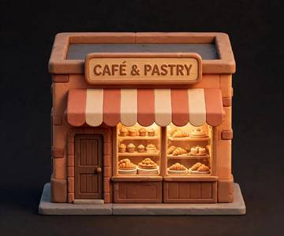
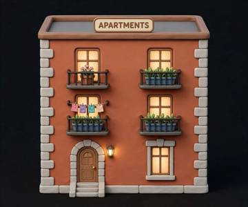
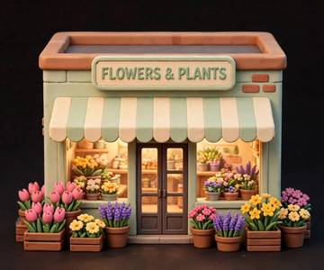
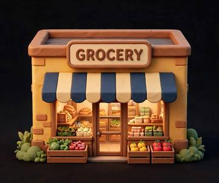
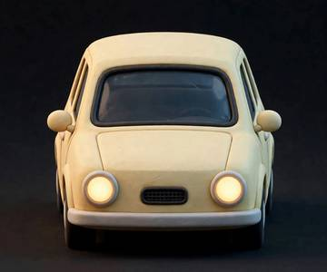
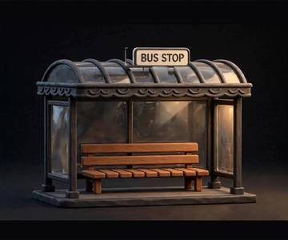
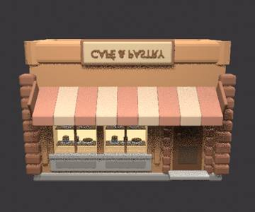

🏙️ City-Block Asset Pipeline
Live observability — generated 2026-09-13 11:37 PDT
3D modeling pipeline — RUNNING
worker mtick-20260913-1827
heartbeat Sep 13, 11:34
working on 01-cafe-building · phase judging · rev bs4
3 fresh holistic judges scoring bs4 renders (structure/materials/fidelity) with canonical refs; mesh-gate audit found open shells in GLB (text 29.9k boundary edges)
Schematic pipeline — RUNNING
worker stick-20260913-1836
heartbeat Sep 13, 11:36
working on city-center-v1 · phase extracting · rev 43-man-with-stroller
Resuming city-center-v1: items 30-42 filed, next item 43 (man with stroller); locking reference inventory before dispatching builders
Schematics 42 items

01-cafe-building
avg 9.38 · upd Sep 12, 21:11
finished
02-apartment-building
avg 9.33 · upd Sep 13, 00:04
finished
03-flower-shop
avg 9.31 · upd Sep 13, 00:04
finished
04-grocery-store
avg 9.37 · upd Sep 13, 00:04
finished
05-sedan-car
avg 9.34 · upd Sep 12, 19:12
finished
06-van
avg 9.30 · upd Sep 12, 19:27
finished
07-bicycle
avg 9.33 · upd Sep 12, 19:48
finished
08-kid-with-balloon
avg 9.45 · upd Sep 12, 19:11
finished
09-dog-walker
avg 9.24 · upd Sep 12, 19:26
finished
10-cafe-patrons
avg 9.16 · upd Sep 12, 20:18
finished
11-shopper-with-bags
avg 9.33 · upd Sep 12, 20:20
finished
12-big-puffy-tree
avg 9.34 · upd Sep 12, 19:10
finished
13-small-tree
avg 9.19 · upd Sep 12, 20:33
finished
14-bush
avg 9.28 · upd Sep 12, 20:36
finished
15-planter-tulips
avg 9.42 · upd Sep 12, 20:09
finished
16-grass-patch
avg 9.14 · upd Sep 12, 21:07
finished
17-street-lamp
avg 9.45 · upd Sep 12, 19:09
finished
18-produce-crates
avg 9.35 · upd Sep 12, 19:27
finished
19-cafe-table-set
avg 9.23 · upd Sep 12, 19:43
finished
20-intersection
avg 9.43 · upd Sep 12, 19:12
finished
21-cobblestone-road
avg 9.34 · upd Sep 12, 19:26
finished
22-sidewalk-curb
avg 9.35 · upd Sep 12, 20:36
finished
23-plinth-base
avg 9.36 · upd Sep 12, 20:37
finished
24-cobble-straight
avg 9.51 · upd Sep 12, 22:01
finished
25-cobble-corner
avg 9.56 · upd Sep 12, 21:56
finished
26-cobble-t-junction
avg 9.54 · upd Sep 12, 21:57
finished
27-cobble-end
avg 9.44 · upd Sep 12, 21:59
finished
28-sidewalk-straight
avg 9.57 · upd Sep 12, 21:20
finished
29-sidewalk-plain
avg 9.37 · upd Sep 12, 21:17
finished
30-business-center-tower
avg 9.30 · upd Sep 13, 01:26
finished
31-office-tower
avg 9.30 · upd Sep 13, 01:51
finished
32-offices-downtown
avg 9.33 · upd Sep 13, 02:29
finished33-hot-dog-stand
avg 9.32 · upd Sep 13, 03:22
finished
34-bus-stop-shelter
avg 9.16 · upd Sep 13, 03:43
finished
35-traffic-light
avg 9.22 · upd Sep 13, 04:55
finished
36-bus-stop-sign
avg 9.36 · upd Sep 13, 06:35
finished
37-trash-bin
avg 9.09 · upd Sep 13, 08:25
finished
38-tree-planter-box
avg 9.25 · upd Sep 13, 08:50
finished
39-city-bus
avg 9.09 · upd Sep 13, 09:36
finished
40-scooter
avg 9.22 · upd Sep 13, 09:58
finished
41-businessman-with-briefcase
avg 9.13 · upd Sep 13, 10:30
finished
42-kid-with-backpack
avg 9.14 · upd Sep 13, 11:36
finished3D Models 3 items

01-cafe-building
upd Sep 13, 11:34
in progress
33-hot-dog-stand
upd Sep 13, 10:06
in progress
34-bus-stop-shelter
upd Sep 13, 10:27
in progressAll times Pacific. Click any card for detail, iterations, and 3D view.